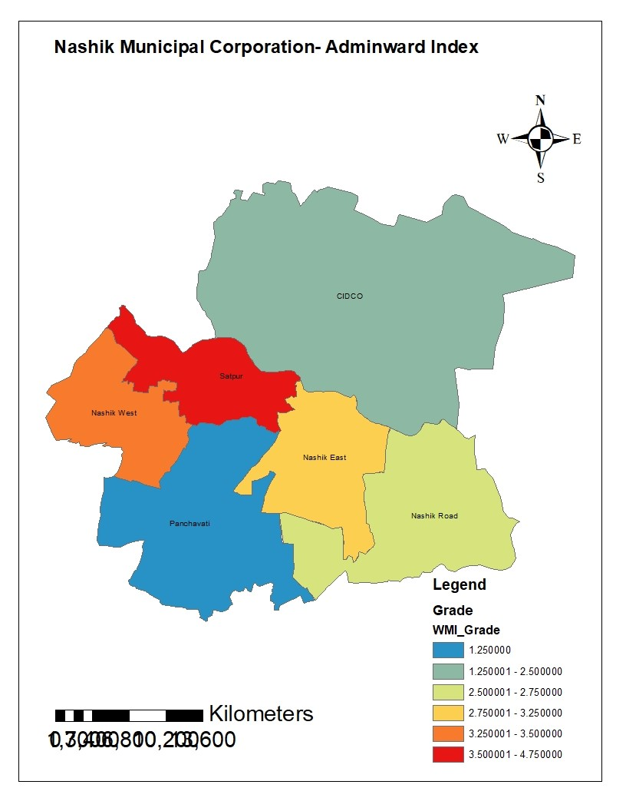

DAM BREAK FLOOD ANALYSIS AND INUNDATION STUDIES AND PREPARATION OF EAP- KANSAVATY-KUMARI DAM (GOVT OF WEST BENGAL)
DAM BREAK FLOOD ANALYSIS AND INUNDATION STUDIES AND PREPARATION OF EAP FOR HENLOW DAM (GOVT OF WEST BENGAL)
INTEGRATED MANAGEMENT PLAN- ANSUPA LAKE (GOVT OF ODISHA)

INTEGRATED MANAGEMENT PLAN- CHILIKA LAKE (GOVT OF ODISHA)
INTEGRATED MANAGEMENT PLAN-DHAR WETLAND COMPLEX (GOVT OF MP)
INTEGRATED MANAGEMENT PLAN- GIRWAR LAKE (GOVT OF M P)

INTEGRATED MANAGEMENT PLAN- KHAJADIA LAKE (GOVT OF GUJARAT)
PR-POLLUTION ABATEMENT AND CONSERVATION OF RIVER MINDHOLA FOR THE SEWAGE DISPOSAL CATCHMENT OF THE NEW SOUTH ZONE OF SURAT MUNICIPAL CORPORATION (SMC)(APPRAISAL)
CRITICAL ANALYSIS OF STORMWATER DRAINAGE NETWORK IN MITHI BASIN IN VIEW OF JULY -2005 FLOOD EVENT IN MUMBAI.
STUDY FOR DEVELOPMENT OF INTER-BASIN WATER GRID FOR MAHARASHTRA USING GEOSPATIAL AND SIMULATION TOOLS
DRIVER REJUVENATION BY ADOPTING CONTINUOUS STREAM STORAGE (CSS) APPROACH IN MULA- MUTHA BASIN USING GEOSPATIAL & SIMULATION TOOLS

STUDY OF WASTE WATER MANAGEMENT SYSTEM FOR ICHALKARNJI CITY USING SOFT COMPUTING TOOLS
PERFORMANCE EVALUATION STUDY OF WARD-WISE SOLID-WASTE MANAGEMENT SYSTEM FOR NASHIK CITY
STUDY OF SOLID-WASTE MANAGEMENT SYSTEM FOR PUNE CITY USING GEOSPATIAL TOOLS
| Sr. No | Project Name | Duration | Position Held | Activities Performed |
|---|---|---|---|---|
| 1 | Construction of Dam foundation strengthening and Pile foundations for bridges & also high rise building. | Aug 1981 to Sept, 1983 | Site Engineer | Foundation and Piling works : • Supa dam (Karnataka) • Periyar Dam (Kerala/ Tamilnadu) • Railway Bridge- Piling ( Jaipur) • Dhuvaran Power House – Daiphram wall (Gujrat) • Dak Bhavan BuIlding -Piling (Delhi) |
| 2 | Preparation of Perspective Plans for Ganga – Brahmaputra Basins | Sept-1983 to Nov. 1987 | Assistant Director | Hydrological data compilation and Analysis for various sub basins in Ganga Brahmputra and Meghana System |
| 3 | Hydrological appraisal of water resources projects for techno-economic clearance by then Planning Commission for the States of Maharashtra, Karnataka and Goa | Nov, 1987 to Aug, 1990 | Deputy Director | Hydrological Appraisal of Projects: Water vaalibility/Design flood estimation/Sedimentation • Dhom Project (Mah) • Talamba Project(Mah) • Tillati Project(Mah) • Ib Irrigation Project (Odisha) • Sharavati Tailrace project( Karnataka) |
| 4 | a) Establishment and management of Hydrological Information System (HIS) / Flood forecasting network in Upper Krishna Basin and West flowing rivers of Maharashtra and Goa. b) Monitoring of Irrigation & Hydropower Projects under Construction in Upper Krishna Basin and West flowing rivers of Maharashtra and Goa. | Sept, 1990 to Sept, 1997 | Executive Engineer | a)• Krishna Basin Hydrological Information System(HIS) management • Establishment of new hydrological observation stations • Hydrlogical data collection analysis and publication. • Flood forecasting b)Project Monitoring: • Natuvadi Project • Kasari Project • Kumbhi Project • Kasassai Project • Patgaon Project |
| 5 | Construction monitoring of Sardar Sarovar Dam, Power House and other components and interstate aspects of the project involving states of Maharashtra, Gujarat, Madhya Pradesh & Rajasthan. | Apr2010 to May, 2012 | Deputy Secretary | • Sardar Sarovar Project Monitoring • Daam & PowerHouse • Interstste co-ordination |
| 6 | Overall management of Tapi, Narmada & 13 other river basins in Maharashtra, Gujarat, Madhya Pradesh and Rajasthan. a) Management of Hydrological Information System (HIS) network. b) Monitoring of irrigation projects under Central Schemes (PMKSY, AIBP, RRR, and FMP). c) Development of Water Information System and Flood Forecasting for major cities like Surat, Bharuch, etc. | May, 2012 to May, 2016 | Chief Engineer | HIS management Inflow/Flood forecasting for Projects/ Towns • Ukai Project ( Surat City) • Bharuch City (Sardar sarovar) Project Monitoring: • Akkalpada Project • Nilwande Project • Waghur Project • Nandur Madhyameshwar Project • Punad Project • Sardar Sarovar canal system • Many medium/ minor projects under RRR |
| Sr. No | Name of Researcher | Dissertation Title | Institute | Year |
|---|---|---|---|---|
| 1 | Poonam Saindansing | Critical analysis of storm water drainage network in Mithi Basin in view of July -2005 flood event in Mumbai. | COEP,Pune Unv | 2022 |
| 2 | Prajakta Gaware | Stream rejuvenation for Mula basin using IWRM approach for drought management | COEP,Pune Unv | 2022 |
| 3 | Gayatri Salunkhe | Performance evaluation study of ward wise solid waste management for Nashik city using geospatial and analytical tools | COEP,Pune Unv | 2022 |
| 4 | Ashish Shinde | Surban Flood Modelling for Pune City using Geospatial Tools | COEP,Pune Unv | 2021 |
| 5 | Ashutosh Wala | Drought management for Karha watershed using simulation tools (* Ongoing). | COEP,Pune Unv | 2020 |
| 6 | Priydarshani Deshmukh | Benchmarking of Khadakwasla Irrigation Project using Geospatial and Simulation Tools | COEP,Pune Unv | 2021 |
| 7 | Saurabh Gangurde | Development of perspective plan for integrated water supply and sanitation system for Dhule city using geospatial tools | COEP,Pune Unv | 2020 |
| 8 | Akshata R Kothale | Study of Solid Waste Management System for Pune City using Geospatial Tools | COEP,Pune Unv | 2020 |
| 9 | Srujan Gavale | River rejuvenation by adopting Continuous Stream Storages (CSS) approach in Mula- Mutha basin using geospatial & simulation tools | COEP,Pune Unv | 2019 |
| 10 | Nishank R Irabatti | Study of water supply network for Solapur city suburb using soft computing tools | COEP,Pune Unv | 2019 |
| 11 | Shailesh Pandhe | Operation and management of multi- reservoir system in Girna basin using simulation tools | COEP,Pune Unv | 2018 |
| 12 | Shailesh Gavai | Development of perspective plan for Nannaj watershed adopting Continuous Stream Storages (CSS) method using geo- spatial tools | COEP,Pune Unv | 2018 |
| 13 | Manisha | Development of Management Information System (MIS) for Mula- Mutha River basin using Geoinformatics | Birla Institute of Technology, Mesra(Ranchi) | 2006 |
| Sr. No | Name of Researcher | B Tech Project Title | Institute | Year |
|---|---|---|---|---|
| 1 |
|
Study of waste water management system for Ichalkarnji city using soft computing tools | CoEP, SSPU Pune | 2021-22 |
| 2 |
|
Study of development of inter basin water grid for Maharashtra using geospatial tools(Received M/S M B Gharpure Innovative UG/ PG project award -2022) | CoEP, SSPU Pune | 2021-22 |
| 3 |
|
Impact assessment of urbanization on drainage system in Pune area using geospatial tools | CoEP, SSPU Pune | 2019-20 |
| 4 |
|
Perspective planning of surface water storage utilization for major projects in Vatrak Basin using simulation technique | Sinhgad College of Engg, SSPU, Pune | 2005-06 |
| 5 |
|
Development of information system for industrial zone using geoinformatics | Cusrow Wadia Institute of Technology, SSPU Pune | 2005-06 |
| 6 |
|
Optimum utilization of reservoir water for variable cropping pattern using simulation approach. | Pravara Rural Engg College, Loni, SSPU Pune | 2005-06 |
| 7 |
|
Runoff estimation using Geographical Information System | D Y Patil College of Engg, SSPU Pune | 2004-05 |
| 8 |
|
Integrated operation of major water resources projects in Ghod Basin using simulation techniques | Sinhgad College of Engg, SSPU Pune | 2004-05 |
| 9 |
|
Decision Support System (DSS) for Integrated Water Resources Management (IWRM) in Mula Mutha Basin | D Y Patil College of Engg, SSPU Pune | 2003-04 |